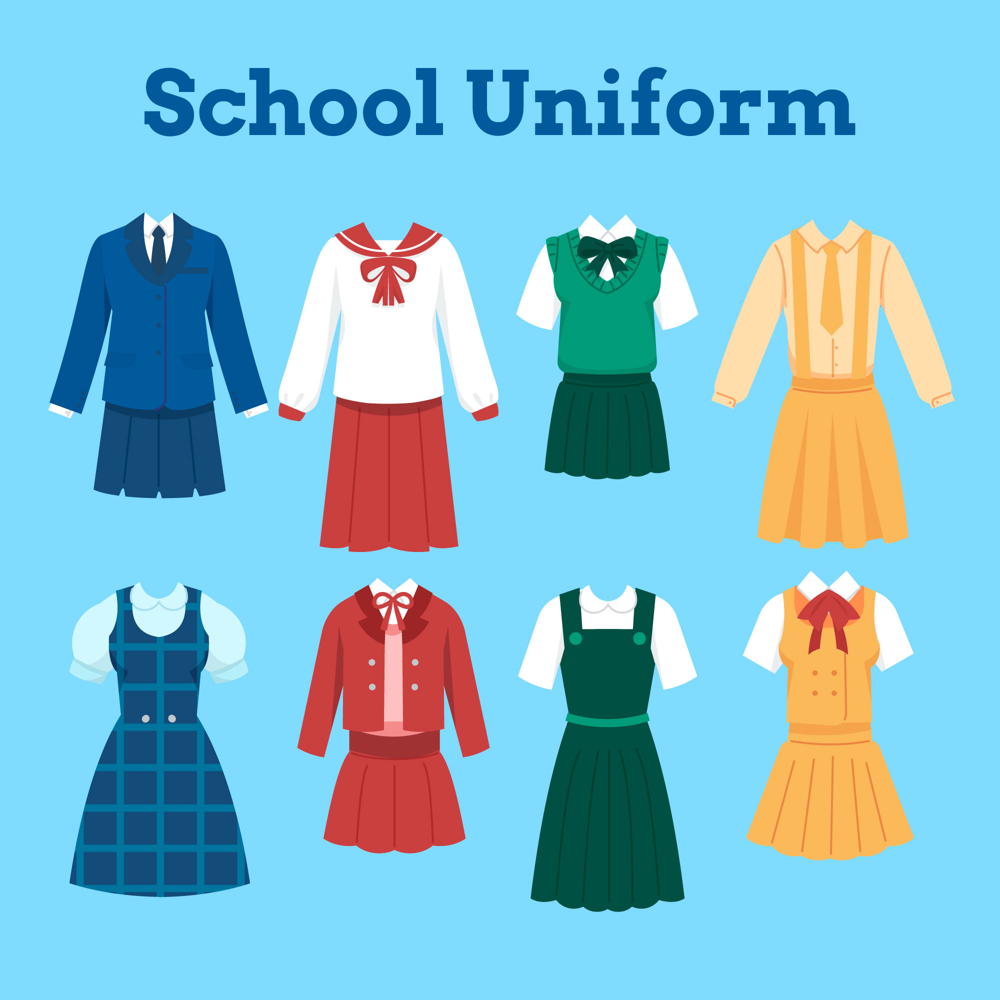
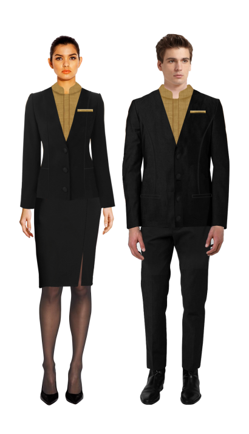
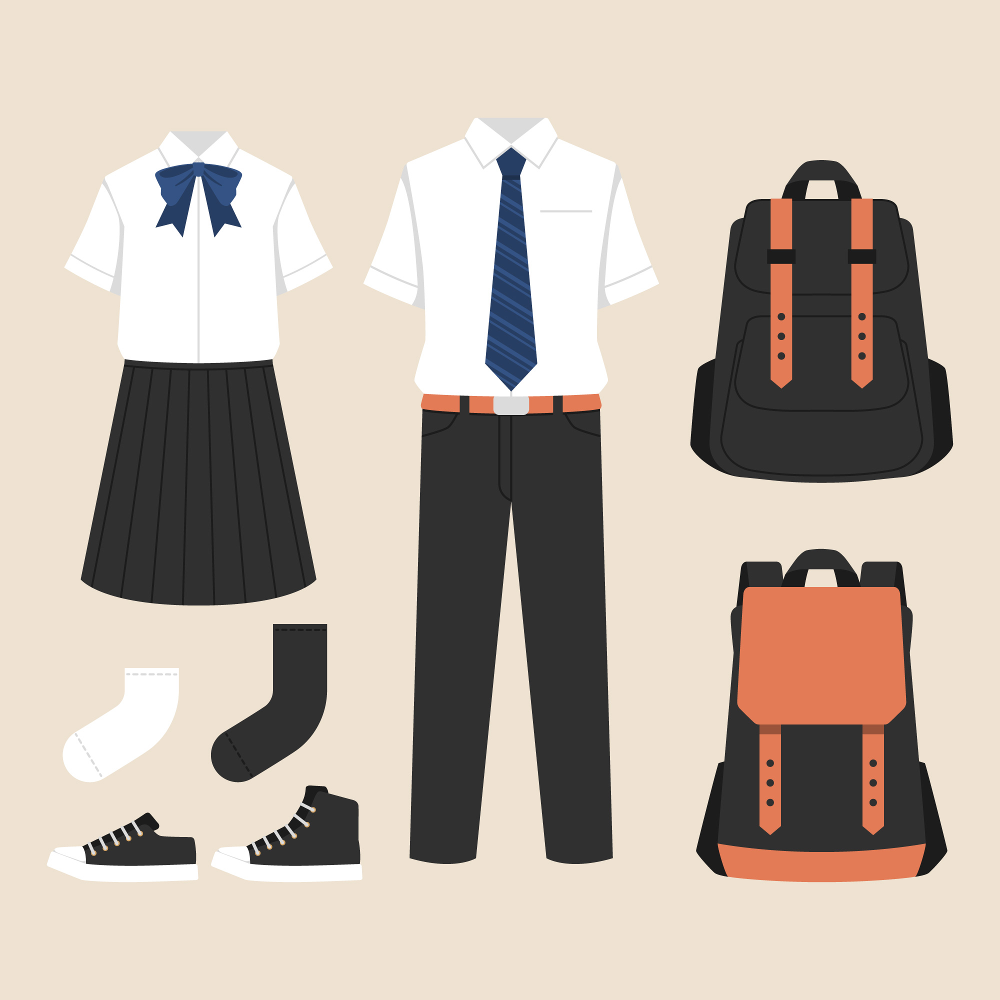

Imagine this:
You're wearing a clean, well-fitting T-shirt, a stylish pair of jeans, and maybe a hoodie on top. The fabric feels comfortable, the fit is perfect—not too tight, not too loose—and when you walk outside, people notice your style.
These clothes are designed for:
They are made from soft, breathable materials, meaning you can wear them all day—at school, work, or while hanging out—and still feel fresh.
The designs are trendy and simple, so they match easily with anything you already own.
Why You Should Buy These Clothes (Customer-Focused Advantages)
1. You Will Always Look Smart and Attractive
When you wear well-designed clothes, people notice you immediately.
Why you should buy:
You don't need expensive fashion to look good—these clothes give you a clean, confident appearance every day.
2. You Feel Comfortable All Day
The fabric is soft and breathable, so it doesn't irritate your skin or make you feel too hot.
Why you should buy:
You stay relaxed whether you are walking, working, or traveling—no discomfort.
3. Perfect for Any Occasion
5. Affordable but Valuable
You get good quality at a fair price.
Why you should buy:
You enjoy both style and quality without spending too much.
6. Easy to Match with Other Clothes
The colors and designs are simple and modern.
Why you should buy:
You can mix and match easily—no stress choosing what to wear.
7. Boosts Your Confidence
When you dress well, you naturally feel more confident.
Why you should buy:
Confidence helps you in social life, school, and even business.
8. Suitable for All Ages
Whether you are young or older, the style still fits you.
Why you should buy:
You don't need to worry about fashion trends changing too fast—this style stays relevant.
9. Easy to Maintain
They are easy to wash and dry quickly.
Why you should buy:
You save time and effort in your daily routine.
10. Keeps You in Trend
These clothes follow modern fashion styles.
Why you should buy:
You stay updated and stylish without needing fashion knowledge.
| school pack | office pack |
|---|---|
 |
 |
 |
|
|